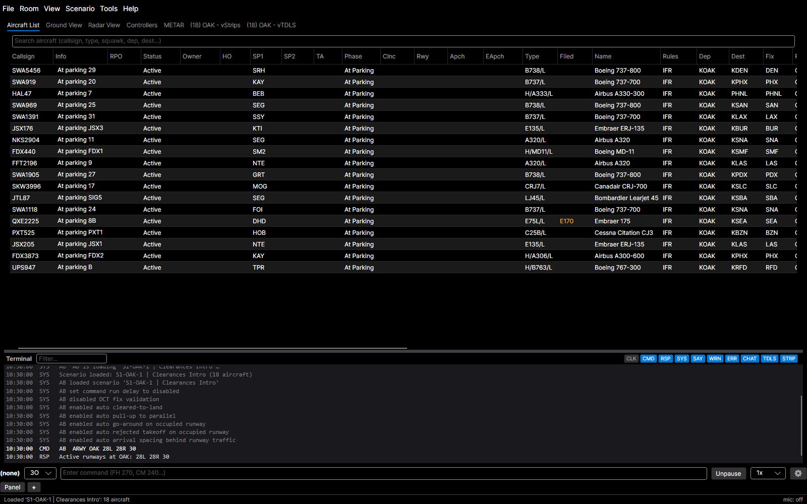
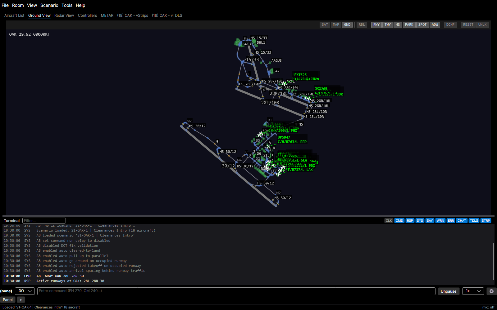

YAAT-1253 · First-use tutorial: how a step looks
The same tutorial step drawn three ways over the real client (OAK Clearances Intro, Aircraft List tab). Each lane is a candidate for how the guided tour presents itself; pick one, or a mix.
Coach mark
dimmed backdrop, spotlight cut-out on the Ground tab, callout anchored to it
Open the Ground view
Click the Ground View tab or press Ctrl+Shift+G.
- BehavesAn overlay layer over the main window; only the spotlit control takes clicks, the hotkey still works, and the callout follows the control.
- Worst caseBlocks the rest of the window while a step waits: no reading the grid or typing a command until the user does the step or skips.
Docked guide panel
narrow panel on the right of the main window, step list, target outlined, no dimming- BehavesPart of the main window's layout; the whole tour stays visible, the app stays fully usable, and the outline marks where to act.
- Worst caseTakes width from the views: the grid loses its right-hand columns (here everything past Name) and the radar and ground scopes shrink while the panel is open.
Floating guide window
small always-on-top window beside the main window, target outlinedOpen the Ground view
Click the Ground View tab in the main window, or press Ctrl+Shift+G.
- BehavesIts own window, so it can sit beside any YAAT window (pop-outs, Settings) and the main window keeps its full width.
- Worst caseCan be lost behind other windows or left on another monitor, far from the control it points at; the outline is the only link between them.
When the user does it

Ground View tab selected (by click or Ctrl+Shift+G): the step completes on its own and every format moves to Step 4. In A the spotlight jumps to the next target; in B step 3 collapses with a tick; in C the window's text changes in place.
Screenshots: docs/user-guide/img/main-window-overview.png and ground-view.png (GuideCapture). Ground View hotkey is the default binding, rebindable in Settings › Keys. Tutorial chrome is drawn in HTML over the screenshots; colours and sizes are indicative.